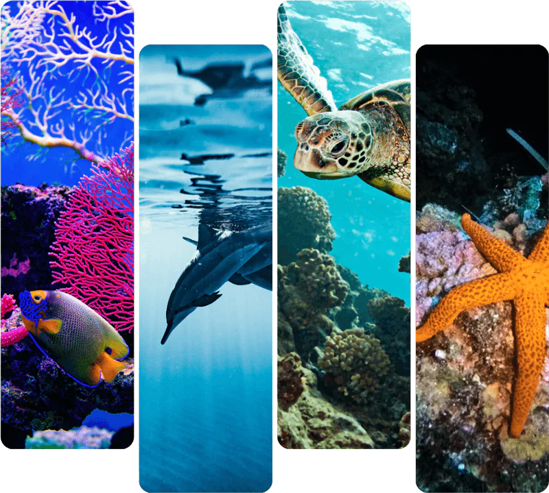
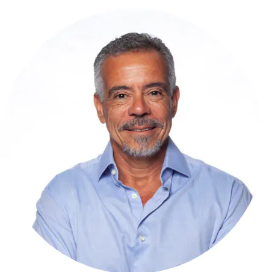
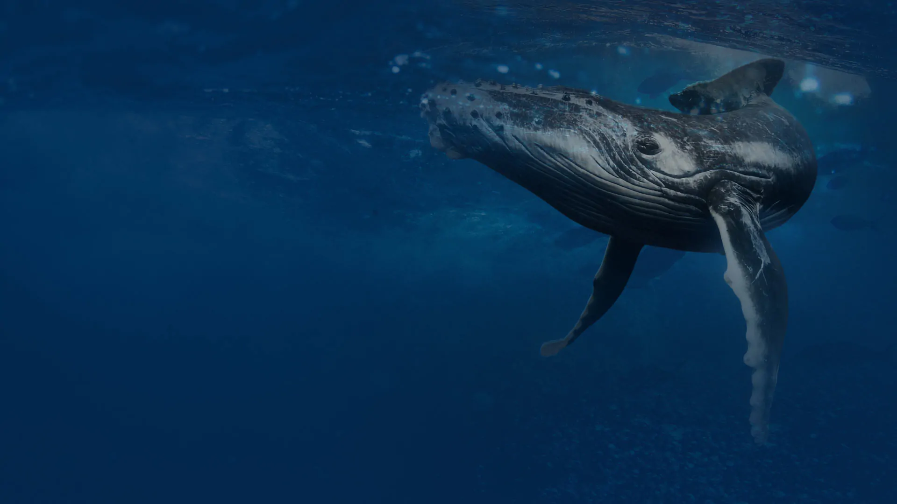
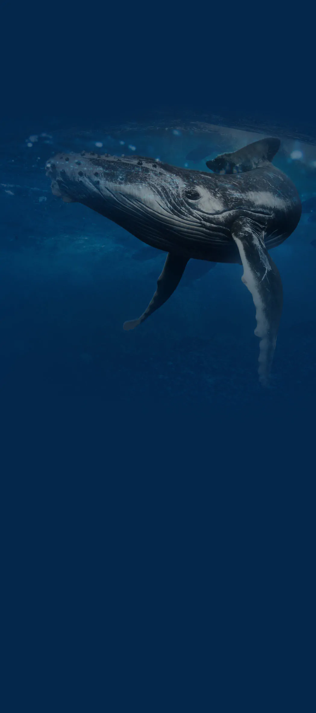
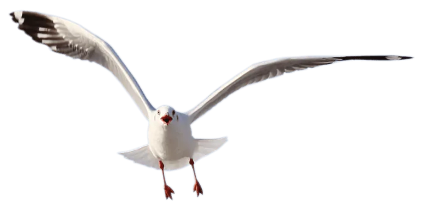

15 Jan 2025
Década do Oceano: Nosso Compromisso com a UNESCO
Saiba como nossa parceria com a UNESCO está transformando a conservação marinha no Brasil.
Ler maisOrganização sem fins lucrativos dedicada à conservação marinha, educação ambiental e mobilização social. Parceira oficial da UNESCO — atuando para proteger os oceanos e alcançar 2 milhões de pessoas até 2030.

O Instituto Gaia Soul nasceu do sonho de transformar a relação das pessoas com o mar. Somos uma organização sem fins lucrativos, parceira oficial da UNESCO na Década do Oceano (2021-2030), comprometidos em informar, sensibilizar e engajar gerações para a proteção dos ecossistemas marinhos.
Nossa jornada é guiada pela ciência, pela educação e pela mobilização social — atuando em parceria com comunidades costeiras, escolas, empresas e governos para construir um futuro onde o oceano seja valorizado e protegido por todos.

Marcelo Telles é defensor do Ecocentrismo, amante da natureza e determinado a disseminar a cultura oceânica para jovens e toda a sociedade. Mestre em Oceanografia Biológica, com dissertação sobre o "Modelo Trofodinâmico dos Recifes de Corais em Franja do ParNaM Abrolhos-BA", desde 2000 é mergulhador com inúmeras especializações e cerca de 980 mergulhos registrados. Possui histórico de navegação extenso, incluindo 2 travessias do Oceano Atlântico, Costa Europeia, Mar Mediterrâneo, Ilhas do Caribe e Geórgia do Sul — cerca de 100 mil milhas navegadas a bordo de navios mercantes e 11 mil navegadas no veleiro Gaia Soul.
Informar, sensibilizar e engajar pessoas a protegerem o oceano por meio de educação ambiental, ciência e mobilização social de impacto real.
Alcançar 2 milhões de pessoas até 2030, criando uma rede global de guardiões do oceano comprometidos com a conservação marinha.
Nosso compromisso com o oceano guia nossas ações sociais. Atuamos com transparência, colaboração e respeito à natureza e às comunidades.
Os oceanos enfrentam ameaças críticas que exigem ação imediata
90% dos estoques pesqueiros estão esgotados ou em risco
8 milhões de toneladas de plástico entram no oceano anualmente
O pH do oceano caiu 30% desde a revolução industrial
O oceano absorve 90% do calor extra do planeta
50% dos recifes de coral já foram perdidos
Mais de 1/3 dos mamíferos marinhos estão em risco
Derramamentos e resíduos afetam ecossistemas costeiros
Ruídos subaquáticos prejudicam comunicação dos cetáceos
Cada número representa uma vida impactada, um ecossistema preservado e um futuro mais sustentável.
Histórias reais de quem fez parte da nossa missão
"A palestra do Marcelo Telles transformou a forma como nossos alunos enxergam o oceano. Uma experiência que vai além da sala de aula — é propósito, é ciência, é emoção pura."
"O Instituto Gaia Soul chegou na nossa comunidade e trouxe dignidade. As cestas básicas e o Natal solidário foram um presente para mais de 600 crianças. Nunca esqueceremos."
"Participar do Festival 'O Som do Oceano' foi uma experiência única. Arte, música e consciência ambiental — o Gaia Soul prova que é possível engajar em grande escala."
Nossa atuação é estruturada em três frentes complementares que geram impacto real e duradouro.
Estudos científicos rigorosos que fundamentam cada ação de conservação e credenciam o Instituto perante parceiros globais.
Programas de formação para escolas, comunidades e empresas — construindo uma cultura oceânica desde a base.
Engajamento de comunidades costeiras, pescadores e marisqueiras em ações concretas de conservação e desenvolvimento sustentável.
Projetos que conectam pessoas, ciência e o oceano

Educação ambiental imersiva a bordo do veleiro: realidade virtual, conscientização oceânica e experiências transformadoras para grupos e famílias.
Agendar experiênciaMarcelo Telles compartilha sua trajetória de 35 anos no mar: liderança, propósito, sustentabilidade e a urgência de proteger nossos oceanos.
Solicitar palestra
1 milhão de m² preservados. Retiros imersivos na natureza, reconexão com a consciência e restauração ecológica integrando tecnologia e biodiversidade.
Saiba Mais
Desde 2019, apoiamos pescadores artesanais e marisqueiras da Baía do Iguape com cestas básicas, ações de Natal e mobilização comunitária.
Saiba Mais
Parceria com o Colégio Antônio Vieira na Gincana Ambiental 2024 — engajando estudantes em ações concretas de educação e preservação oceânica.
Saiba MaisFestival cultural "O Som do Oceano" em parceria com a Jovem Pan SC — unindo música, arte e conscientização ambiental para grandes audiências.
Saiba MaisNossas ações contribuem diretamente para os ODS da ONU
Promovemos saúde física e mental através da conexão com a natureza e atividades ao ar livre em ambientes marinhos preservados.
Desenvolvemos programas educacionais sobre conservação marinha para escolas, comunidades e profissionais do setor.
Trabalhamos na proteção de ecossistemas que sequestram carbono, como manguezais e pradarias marinhas.
Conservação da vida marinha, combate à poluição dos oceanos e proteção de espécies ameaçadas são o coração do nosso trabalho.
Protegemos zonas costeiras e ecossistemas de transição que conectam oceanos e florestas através do projeto Mata Quântica.
Acompanhe em tempo real o avanço das nossas iniciativas de conservação
Nossos valores fundamentais guiam todas as nossas ações e decisões na busca por um mundo mais sustentável.
Promovemos práticas que garantem o equilíbrio entre desenvolvimento e preservação.
Dedicação total à nossa missão de proteger e conservar o meio ambiente.
Trabalhamos em parceria com comunidades, governos e organizações.
Nossos programas de preservação florestal protegem milhares de hectares de mata nativa, garantindo a sobrevivência de diversas espécies de fauna e flora.
Apoie esta CausaTrabalhamos na proteção de ecossistemas marinhos, monitorando e preservando a vida nos oceanos e nas zonas costeiras.
Saiba MaisColaboramos com instituições líderes em conservação marinha no Brasil e no mundo
Entre para a comunidade e seja parte da maior rede de conservação marinha do Brasil
Ciência, conservação e histórias de impacto do oceano profundo até você
Saiba como nossa parceria com a UNESCO está transformando a conservação marinha no Brasil.
Ler maisConheça nosso novo projeto que integra tecnologia e conservação da biodiversidade.
Ler maisEntenda como os Objetivos de Desenvolvimento Sustentável direcionam nosso trabalho.
Ler maisJunte-se a essas iniciativas e faça parte da mudança
Monitoramento e proteção das baleias jubarte nas costas brasileiras durante a estação reprodutiva.
Ações mensais de remoção de resíduos em praias e manguezais com a participação da comunidade.
Plantio de espécies nativas em áreas degradadas da Mata Atlântica usando tecnologia de geolocalização.
Programa de educação ambiental marinha para alunos do ensino fundamental e médio em escolas públicas.
Tem interesse em parcerias, palestras, projetos ou quer apoiar nossa missão? Entre em contato — será um prazer conversar.
Escolha a melhor forma de proteger os oceanos junto com a gente
Participe das ações de campo, eventos de conscientização e campanhas de limpeza de praias e manguezais ao nosso lado.
Quero ser voluntárioSua doação financia pesquisa, educação ambiental e iniciativas sociais nas comunidades costeiras. Cada real salva um ecossistema.
Quero apoiarAlinhe sua empresa com os ODS da ONU e associe sua marca ao maior esforço de conservação marinha do Brasil.
Falar com nossa equipeSeu apoio financia pesquisa, educação e projetos sociais reais que já transformaram mais de 10.000 vidas. O oceano precisa de você agora.